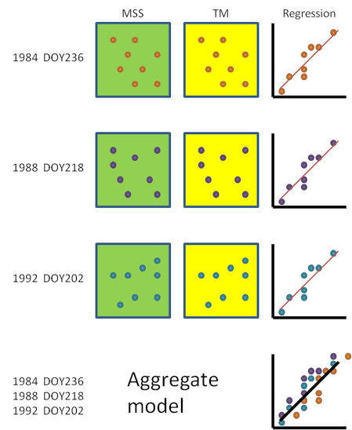
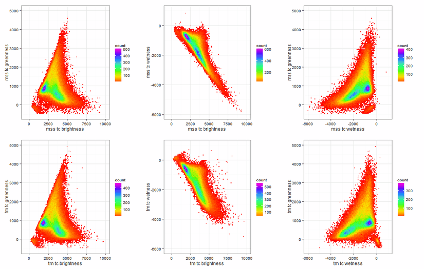
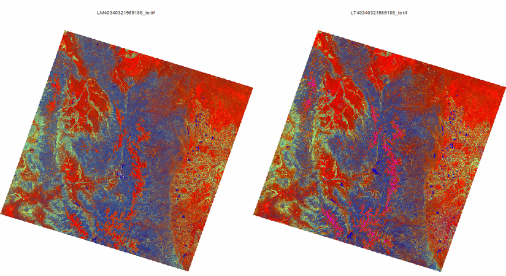
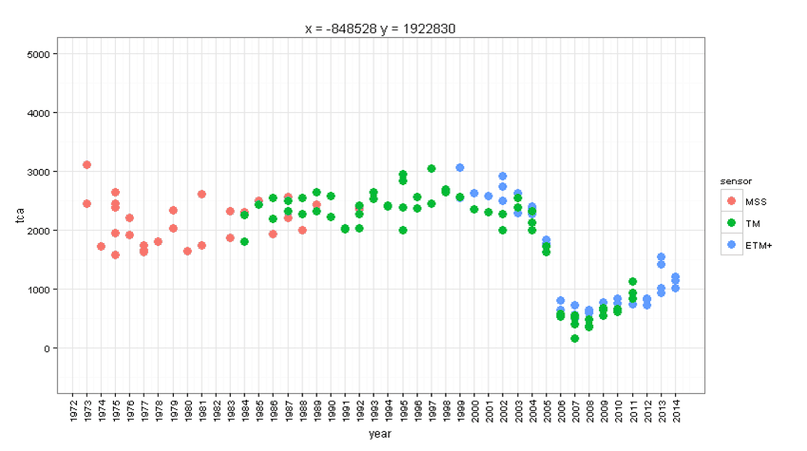

MSScal
MSScal calibrates MSS images to TM images through modeling of TM spectral indices from the 4 MSS bands. A set of coincident images are used to define the model (Landsat satellites 4 and 5 carried both MSS and TM sensors collecting images simultaneously). MSScal identified MSS/TM image pairs from directories provided by the user. A spatially coincident sample of pixel values are drawn from each image pair and placed in a large database (Figure 1). A separate database is created for each TM tasseled cap index (brightness, greenness, wetness, and angle). The MSS sample includes values from all 4 bands and the TM sample values represent a single spectral index. Multiple linear regression is applied to predict the TM/ETM+ spectral index from the four MSS bands. Since the model incorporates variance introduced by multiple individual MSS/TM relationships, it represents a mean model which can be applied to all MSS images in an LLR project (Figure 2). To showcase the results of the calibration, three figures are provided. Figure 3 shows a visual comparison of standard tasseled cap planes for MSS (top row) and TM (bottom row) for a sample of pixel values from a coincident image pair. The shape and density of the scatter plots are very similar, particularly for tasseled cap brightness and greenness, with some disparity for wetness. In a similar example, Figure 4 shows an MSS/TM image pair as tasseled cap brightness, greenness, wetness displayed to the red, green, and blue color guns with the same scaling. Notice the close similarity in visual appearance. Finally, Figure 5 displays a time series of calibrated pixel values at a given coordinate for all images included for an example LLR project. Note the smooth blended transition between sensors at their overlap.
Figure 1. Conceptual depiction of LLR calibration model development. MSS and TM coincident image pairs are used to develop an 'aggregated model' to predict TM indices from MSS bands. Each image pair provides a subset of data from which to develop the model. Combining information on the relationship between each image pair provides a mean model with which to apply to all MSS images in LLR project.

Figure 2. Example of actual models from Nine MSS/TM image pairs showing the data cloud and linear relationship for each individual image pair along with the aggregated model regression line (black dashed line). The aggregated model represents the mean relationship between MSS and TM and is applied to all MSS images.

Figure 3. Comparison of the standard Tasseled cap planes for MSS (top row) and TM (bottom row) for coincident images.

Figure 4. Example of MSS (left) and TM (right) tasseled cap indices brightness, greenness, wetness displayed with red, green, and blue color guns for a standardized scale. Note the close similarity between the two coincident image displays.

Figure 5. Calibrated pixel values at a given coordinate for all images included in this example LLR project. Note the smooth blended transition between sensors at their overlap.
This method of spectral harmonization is based on the following manuscript: